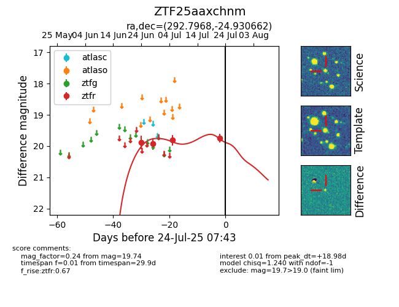

Target ZTF25aaxchnm at 2025-07-24 07:43, see:
FINK: fink-portal.org/ZTF25aaxchnm
Lasair: lasair-ztf.lsst.ac.uk/objects/ZTF25aaxchnm
ALeRCE: alerce.online/object/ZTF25aaxchnm
alt names
ZTF25aaxchnm (ztf,fink)
coordinates:
equatorial (ra, dec) = (292.7968,-24.93066)
galactic (l, b) = (14.1482,-19.35868)
photometry
last ztfr=19.74
4 ztfr detections
